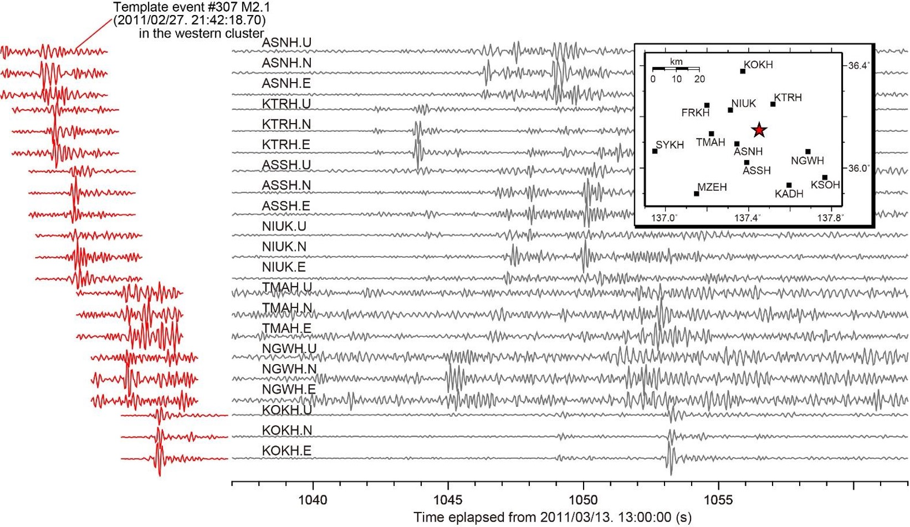

Earthquake template-matching at scale
Earthquake template-matching at scale using GPUs and modern Python
Stefano Campanella
Alessandro Vuan, Monica Sugan


Outline
-
Intro & Motivations
- What is template-matching?
- How is TM used in seismology?
-
Methodology & Implementation
- The workflow
- Computational challenges
- Implementation using modern Python
- Deployment and workload orchestration
-
Results
- The augmented catalogue
- Software improvements
What is template-matching?
Template-matching in computer vision
Template matching is a technique originally developed in digital image processing to find the part of an image that resemble a given template.
In its simplest version, the idea is to compute a similarity index as the template moves across the image. If some criterion based on the index is met, there is a match.
A template-matching algorithm
A straightforward choice for measuring similarity is the so-called normalized cross-correlation \(r\) (Pearson correlation index). Consider the case of a 1D image \(x_n\) and of a search for a single occurrence of template \(y_n\):
Inputs ← \( (x_n)_{0 \leq n < M}, (y_n)_{0 \leq n < N} \) where \( M > N\).
For \(k = 0, \ldots, M - N\) compute \(r_k\), where \[ r_k = \frac{\sum\limits^N_{n = 0} ( x_n - \langle x \rangle ) ( y^{(k)}_n - \langle y^{(k)}\rangle )}{\left( \sum\limits^N_{n = 0} ( x_n - \langle x \rangle )^2 \sum\limits^N_{n = 0} ( y^{(k)}_n - \langle y^{(k)} \rangle )^2 \right)^\frac{1}{2}} \; . \]
Output ← detection at \(\text{argmax} \left( r_k \right)\).
Template-matching in seismology
Earthquake template-matching
The previous one dimensional case is the one of seismology, with one important difference: both the signal and the template comprise several time series (traces). Simplifying a bit, each trace is a seismogram registered at a particular location.
Here the template is the relevant part of the signal produced by a known earthquake (i.e. coming from an existing catalogue) at that location. The similarity index is usually the mean value of the ones of each trace. If there is a match, one might reasonably conclude that it has approximately the same source as the template.
Indeed, the relative displacement of traces in the template (delays) encodes important information about the position of the source and the value of the similarity index encompasses both the similarity of waveforms and delays.
Example of earthquake TM setting
from Kato et al., (2013, GRL)
Example of detection
from Kato et al., (2013, GRL)
Subtleties
- Procedure depends on data preparation (trim, resample, filter, etc.)
- Noise level is not known nor constant
- Seismic network might change
- Traces not perfectly synchronized
- Template and detection don't have the exact same location
- \(r_k\) can change significanlty over few samples
- Filter out spurious detections
Scientific goal
This technique has been applied to the study (RISE, Horizon 2020) of the central Italy normal fault, in particular to the pre-sequence of the Amatrice earthquake (August 24th, 2016).
The relevance of such studies concernes:
- Production of so-called augmented catalogues for statistical purposes.
- Analysis of seismogenic processes.